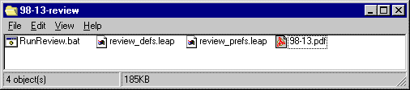
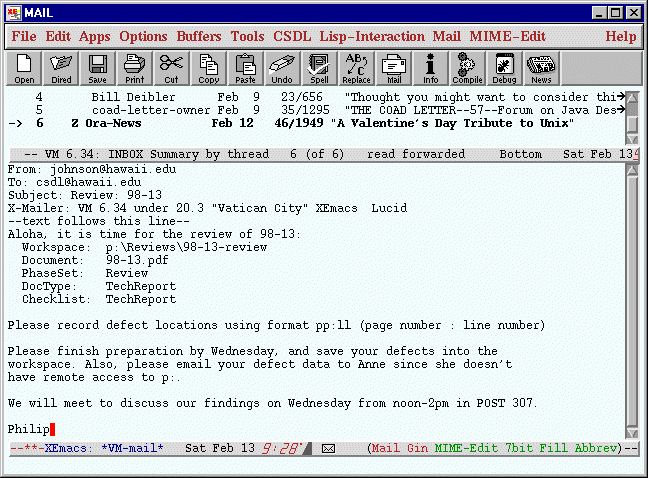
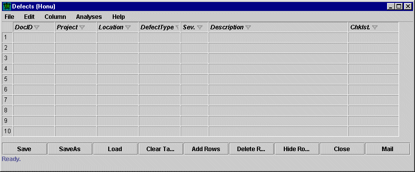
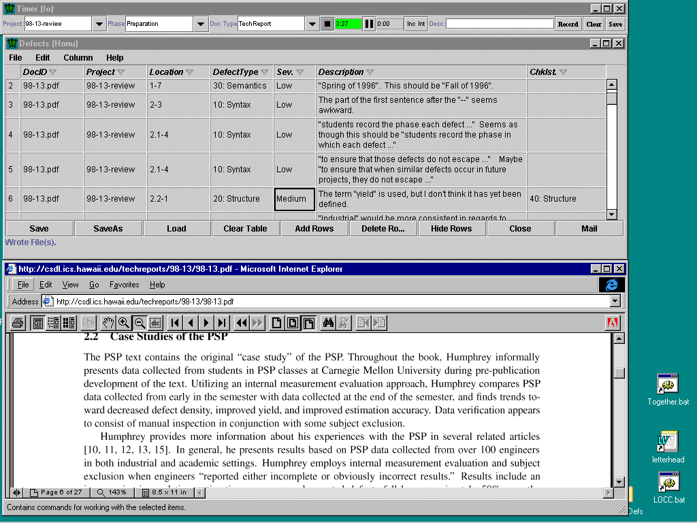
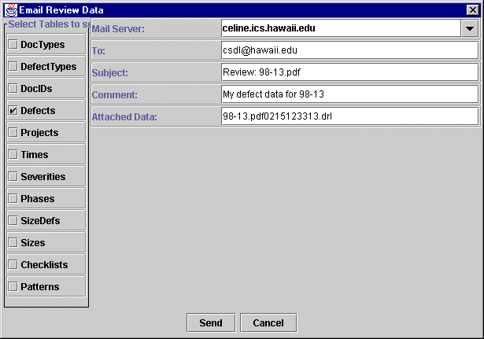
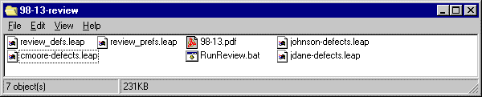
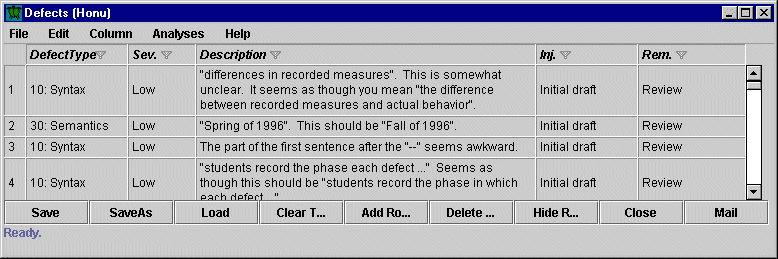
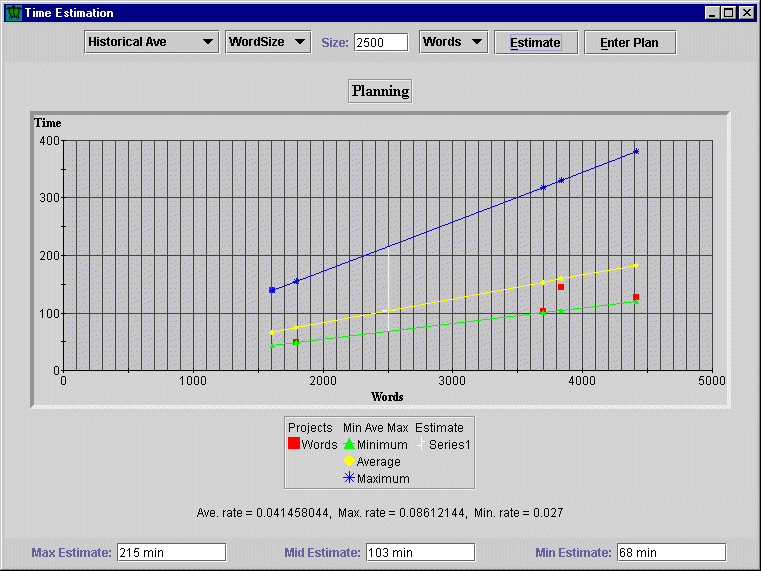
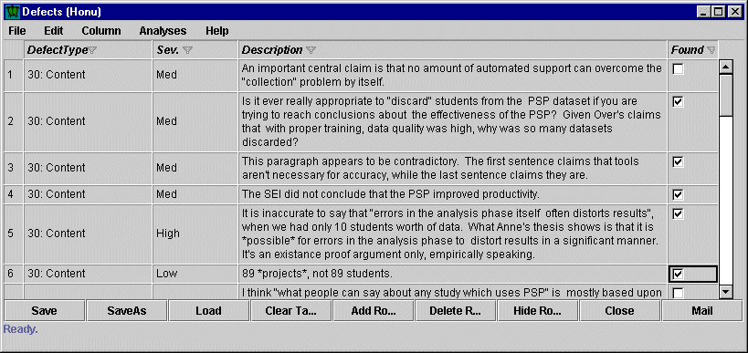
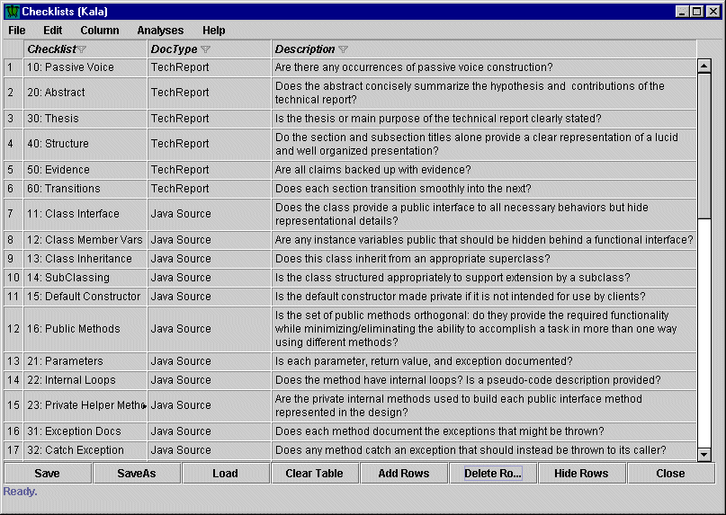

Reflective Software Engineering with the Leap toolkit
Introduction to Software Review using Leap
Last modified: Fri Jul 16 11:30:32 HST 1999
Table of Contents
Formal technical review (FTR) is acknowledged as one of the most efficient and
effective approaches to improving the quality of software work products,
including specifications, designs, plans, and test cases as well as
code. Although code review was the focus of early approaches to software
review, modern practice focuses instead on more upstream documents because
specification and design defects are typically the most expensive kinds of
defects to remove later on in the development process.
Formal technical review is defined as:
A method involving a structured encounter in which a group of technical
personnel analyzes an artifact according to a well-defined process.
The outcome is a structured artifact that assesses or improves
the quality of the artifact as well as the quality of the method.
While there are many variants to FTR, most obey a five step process:
- Planning, involving the setup of the review by a leader.
- Orientation, involving team formation and introduction to the work
product(s) to be reviewed.
- Preparation, in which reviewers individually analyze the work product
and look for defects.
- Meeting/Consolidation, in which the
results of the reviewers' individual preparations are consolidated
into a single, consensual report on the work product. Traditionally, this
consolidation and consensus-building
process is performed in a meeting, although asynchronous, non-meeting based
approaches have also been investigated.
- Rework, in which the author of the work product removes the defects
found.
Originally, FTR was an entirely manual process involving paper printouts
and pencilled comments. In the past decade, several different
computer-supported approaches to formal technical review have been
implemented. The WWW FTR
Archive provides links to most of these systems. In addition, some
of the assumptions underlying traditional review, such as the need for
a face-to-face meeting, have started to come under question.
Despite a broadening in scope and process, it remains clear that bringing a
group of technical personnel together to focus attention on a work product
has an undeniably positive effect upon its quality. The debate tends to
center on how to perform this activity most cost-effectively. Here, it is
also clear that cost-effectiveness depends to a great extent on the
characteristics of the organization. For example, some organizations (such
as certain development groups at Lucent, Inc.) have determined that
face-to-face meetings add little to the effectiveness of reviews while
adding substantially to their cost. However, in other, less mature
development organizations, the face-to-face meeting can provide an
opportunity for high quality education about domain knowledge and
organizational development practices. It is wise for an organization
beginning review to explore the variety of approaches available to help
determine which is most useful and effective for their situation.
The FTR Archive contains links to literature and training organizations
to support organizations in this process.
We designed review support in the Leap toolkit to satisfy the following
objectives:
- Low clerical overhead. Manual forms of software review can
incur substantial clerical overhead, including distribution of
work documents, collation of issues collected by reviewers,
record taking during the review meeting, documentation
of rework activities, and collection and analysis of review
metrics. A primary goal of Leap support for software review
is to reduce the overhead involved with distribution and
management of issue data and review measurements.
- Process neutrality. Review is not a one-size-fits-all
approach to software quality improvement. The Leap tools
attempt to provide generally useful mechanisms for entering
and disseminating review data and measures that can be
adapted to a wide variety of specific review procedures. As
a specific example, Leap tools for review are suited to
both methods including and excluding the review meeting.
- Geographic and temporal neutrality. Leap support for review does
not require reviewers to be the same location or to perform
review at the same time.
- Review measurement and analysis at the individual level.
Unlike traditional review measurement systems, which focus exclusively on
measurement and analysis for organizational process improvement, Leap
supports individual measurement and analysis. For example, Leap analyses
help individual authors to reflect upon the kinds of defects found in their
work products over time and to design checklists to aid them in preventing
those kinds of defects from arising in their work products before
review. Leap also helps reviewers become more skilled at review, by
enabling them to track the kinds of defects others find in work products
that they miss.
The next six sections provide examples of using Leap to support six
basic stages in software review. These stages can and should be
modified to suit the context of your specific organization.
In Leap, as in most forms of FTR, the planning phase requires the review
leader to accomplish two major goals: (1) establish the review process, and
(2) organize the artifacts to be used in review. Review planning in Leap
involves the review leader in three major activities: creating the review
workspace, setting up the leap definitions and preferences files, and
setting up the RunReview batch file.
Although it is not strictly necessary, I highly recommend that the review
leader define a new subdirectory or folder to serve as the central
"workspace" for each review. This workspace should be accessable to
all members of the review team, either via a shared file system or
the Web. This shared workspace will be initially populated with four
things:
- The work product or products to be reviewed.
- A batch file used to invoke Leap for this review (typically called
RunReview).
- A configuration file containing the review process definitions (typically called
review_defs.leap).
- A configuration file of settings to customize various Leap tools for review
(typically called review_prefs.leap).
Leap comes with "shrink-wrapped" versions of the batch and configuration
files for review in the Leap/demo directory that you should use as a basis
for defining your own customized review process. The following
illustration shows an example subdirectory after the initial setup with a
sample document to review and copies (not shortcuts, aliases, or
symbolic links!) of the shrink-wrapped versions of the batch and
configuration files taken from the Leap/demo directory.

Having created the workspace, the next step is to customize the
review_defs.leap file now located in your review workspace. To begin,
bring up a fresh version of Leap and load in this file. The
review_defs.leap file provides sample entries for many of the Leap objects
under the "definitions" menu, including a sample project, document type,
defect types, severities, phases, docID, size definitions, and checklists.
At least initially, you'll be able to do review using this file
as a base with just a few minor changes. However, it's important to
understand exactly how the definitions are used even if you don't
need to change them, so the next several paragraphs discuss all
of the definitions in turn.
- Project. To facilitate later analysis of review data, it is
helpful to define each review as a separate project in Leap. To define a
project, bring up Ilio and fill in the name and a brief description of the
review. You should also select a phase set by right clicking in the
PhaseSet field to pop up a menu of PhaseSets (a "Review" phase set is
provided as a default.) If you desire to compute review measures involving
size (such as defect density, review rate, etc), then you need to specify
the file name of the work product or products in the "FileList" field of
the Project table. If you do not require these size-related measures, then
you can leave the FileList field blank.
Here's an excerpt from the project table in review_defs.leap:
| Project | Project Description | FileList | PhaseSet | Start | Stop |
| 98-13-review |
Review of tech report 98-13 |
98-13.tex |
Review |
Thu Feb 11 10:43:00 HST 1999 |
|
- Document Type. Defining the type of document for this work
product is also quite useful, since it allows you to organize all of the
defects you've collected on all of projects and analyze them separately by
document type. To define a document type, bring up Puaa and add the
document type name and description. The review_defs.leap file provides
five document types by default.
Here's an excerpt from the document types table in review_defs.leap:
| Document Type | Description |
| Java Source |
Java source code |
| JavaDoc |
JavaDoc design |
| TechReport |
General research publication |
| SRS |
Software Requirements Specification |
| Presentation |
Research presentation (typically Powerpoint) |
- Defect Types. Each document type can be associated with a
set of defect types, which help reviewers to categorize the issues that
they find and can aid later analysis and interpretation of review measures.
Pueo defines a set of default defect types for each of the default document
types. These default types are provided merely for illustrative purposes,
and you can and should create an organization-specific set of defect types
for each of your document types. In most cases, defect type categories
should be created or refined from analysis of previous defects uncovered in
the organization's work products. Although the default defect type
categories use a numeric prefix, and we find this to be helpful, it is
not required by Leap.
Here's an excerpt from the defect types table in review_defs.leap:
| Defect Type | Description | DocType |
| 10: Syntax |
General syntax errors |
TechReport |
| 20: Structure |
Errors in the section/subsection organization |
TechReport |
| 30: Motivation |
Error in motivating the report |
TechReport |
| 40: Thesis/claim |
Missing/problematic thesis or claim |
TechReport |
| 50: Evaluation |
Missing/problematic evaluation mechanism |
TechReport |
| 60: Interpretation |
Errors in interpreting results |
TechReport |
| 70: Future directions |
Errors in extrapolating results |
TechReport |
| 80: Lucidity |
Vague or unclear areas |
TechReport |
| 99: Misc. Error |
Miscellaneous error |
TechReport |
- Severities. It can be very useful for reviewers to provide
an estimate of the severity of the particular issue. The Noio tool allows
entry of severity levels, and three default severities (High, Medium, Low)
are provided in review_defs.leap. Severities must be assigned an integer
"level" which is used to order them from the most severe severity (of
level "1") on downward.
Here's an excerpt from the severities table in review_defs.leap:
| Severity | Level | Description |
| High |
1 |
Highest severity error, precludes use of system |
| Medium |
2 |
Moderate severity error, precludes use in many cases. |
| Low |
3 |
Low severity error, only rarely effects use. |
| NonDefect |
4 |
An issue that does not appear to actually be a defect. |
- Phases. The review method outlined in this chapter consists
of six phases: Planning, Orientation, Preparation, Meeting/Consolidation, Rework, and
Postmortem. These six phases are defined in the review_def.leap file, and
collected together into the "Review" phase set. An integer field called
"Order" is used to define the sequence of phases. You can modify the
contents of this table in the Ulua tool to change the existing phase set
or define additional phase sets for alternative review methods.
Here's an excerpt from the phases table in review_defs.leap:
| Phase | Order | PhaseSet | Description |
| Planning |
1 |
Review |
Planning phase, including setting up the workspace and customizing
the process. |
| Orientation |
2 |
Review |
Getting the review team notified and prepared for review. |
| Preparation |
3 |
Review |
Individual reviewer analysis of the work product |
| Meeting/Consolidation |
4 |
Review |
Face to face or asynchronous consolidation of issues, verification
that they are defects, and assignment/refinement of their severity level |
| Rework |
5 |
Review |
Correction of defects found. Typically removed by the author. |
| Postmortem |
6 |
Review |
Analysis of review metrics and generation/refinement of checklists,
patterns, and definitions. |
- DocIDs. Defining a DocID for each work product inspected
during a review is useful for keeping track of which issues were
associated with which work product. In addition, if the same file
is inspected more than once over a period of time, using a DocID
(rather than simply the file name) can help keep track of which issues
were discovered during which review.
Here's an excerpt from the DocIDs table in review_defs.leap:
| Document ID | Description | DocType |
| 98-13.pdf |
The 98-13 technical report |
TechReport |
- Size Definitions. The size definitions table, manipulated
using the Aama tool, is needed in review only if you intend to
produce size-related measures. In this case, you need to define
a size definition corresponding to the size measurements you
produce on each document type. (A given document type can have
more than one possible size definition, incidentally). The
review_defs.leap file includes two example size definitions. Size
definition and measurement in Leap is a complex topic and a
separate chapter in this User Manual is devoted to that topic.
Here's an excerpt from the size definitions table in review_defs.leap:
| Size Type | DocType | FirstLevel | SecondLevel | ThirdLevel | FourthLevel |
| JavaSize |
Java Source |
LOC |
Method |
Class |
Package |
| WordSize |
TechReport |
Words |
|
|
|
- Checklists. Checklist items can be quite useful in
review. The Kala tool supports entry and modification of checklists. Sets
of checklist items are organized by document type. The review_defs.leap
file includes over 30 example checklist items. Most groups will
eventually want to evolve this initial list into one
containing checklists customized to their organization and
work products.
Here's an excerpt from the checklists table in review_defs.leap:
| Checklist | DocType | Phase | Description |
| 10: Passive Voice |
TechReport |
|
Are there any occurrences of passive voice construction? |
| 20: Abstract |
TechReport |
|
Does the abstract concisely summarize the hypothesis and
contributions of the technical report? |
| 30: Thesis |
TechReport |
|
Is the thesis or main purpose of the technical report clearly stated? |
| 40: Structure |
TechReport |
|
Do the section and subsection titles alone provide a clear
representation of a lucid and well organized presentation? |
| 50: Evidence |
TechReport |
|
Are all claims backed up with evidence? |
| 60: Transitions |
TechReport |
|
Does each section transition smoothly into the next? |
- Work product size data. While not located under the
"definitions" menu, if you desire to calculate size-based review measures,
you will need to define the size of the work product(s) under review. To do
this, you use the Iole tool that is accessable from the "Data" menu. The
example review_defs.leap file shows one sample size data entry for the file
98-13.tex (the same file name that was listed in the "FileList" field for
the Project called "98-13-review").
Here's an excerpt from the sizes table in review_defs.leap:
| Date | SizeType | Path | File | Project | # of Units |
| Thu Feb 11 12:36:00 HST 1999 |
WordSize |
|
98-13.tex |
98-13-review |
13128 |
Once you are satisfied with your definitions, you should save out the
modified version of review_defs.leap into the review worksapce
The review_prefs.leap file contains configuration information useful for
review. The two most important configuration items are the MailServer and
the Hidden Column Preferences. When all members of the review group use
the same mail server, setting the MailServer preference once in
review_prefs.leap saves each reviewer from setting it individually.
Of course, in distributed review settings, reviewers can simply
override the default setting with their own Mail Server setting.
To customize the Mail Server setting, bring up Ahi (located under
the File menu in the Leap command tool), and change the
Mail Server hostname value. Then select the "Export" menu item to
save these configurations into your review workspace with the
name review_prefs.leap. It will ask you if it's OK to overwrite
the current file, which you should do.
The Hidden Column preference setting is useful for configuring
Honu for the purposes of review. Honu, the defect recording tool,
has many fields, some of which are more useful for personal defect
collection, and some of which are more useful for group review.
The default review_prefs.leap file contains settings for Honu and
other tools that hide and show the fields that are well suited to
review. To customize the displayed fields, you should go into
Honu and use the Hide/Show menu to set Honu's display the way
you want it. Then, bring up Ahi and press Export as noted above
to save the current window configuration.
The final file to modify is the script file used to invoke Leap
for the purpose of review. This syntax of this script file depends
upon the operating system, but the approach is the same in all
cases: the script simply invokes Leap, passing it the files
review_defs.leap and review_prefs.leap, and instructing it to
open Honu automatically. On Windows platforms, we supply a file
named RunReview.bat to do this, which looks similar to the
following, with the jar files omitted for brevity's sake:
rem RunReview.bat: Invokes Honu with review_defs.leap and review_prefs.leap
rem Edit if LEAP is not installed in default location.
set LEAP=c:\PROGRA~1\Leap
rem Change the directory location of review_defs.leap and review_prefs.leap!
%LEAP%\jre\bin\jre -cp <jars> csdl.java.leap.tool.LeapTool %LEAP%\demo\review_defs.leap %LEAP%\demo\review_prefs.leap -honu
Customization of this file is extremely simple. All you have to do is edit
the final line to change the subdirectory location of review_defs.leap and
review_prefs.leap from the demo directory to your review workspace
directory, then save it back into your review workspace. Note that if
you did not install LEAP in the default location, you'll need to edit the
first 'set' command in this script as well.
During the orientation phase, the review leader informs the review team of
the task to be performed and the location of the review workspace. For an
experienced team that is well acquainted with both review and the work
product, the orientation phase might consist of a
simple email message, such as the one illustrated below:

For inexperienced review teams, it may be more preferable to schedule a
face to face meeting to talk about the purpose and method of review,
potentially including a demonstration of how the Leap tool is used to
record defects.
The essential goal of the preparation phase is for each reviewer to analyze
the work product(s) and discover and record any major issues they find.
Many approaches to preparation have been investigated, including:
ad-hoc approaches where the reviewers simply read and record
issues; checklist-based approaches where reviewers are guided by
one or more checklists, perspective-based approaches where each
reviewer analyzes the work product from a particular point of view;
active approaches where the reviewers "exercise" the work product
by solving problems and/or constructing other work products; and
statistical approaches where reviewers "sample" portions of a
large work product in order to obtain an estimate of the overall quality,
and so forth. Leap can provide helpful infrastructure support for
any of these approaches to preparation.
To begin the preparation phase, reviewers obtain a copy of the work
products from the workspace and double click on the Leap review script
(i.e. RunReview.bat in Windows). RunReview.bat will automatically
load the review_defs.leap and review_prefs.leap files and bring up
the Honu tool for defect recording: as illustrated here:

As you can see, Honu has been configured to show seven fields for each
defect: the document ID, project, location, defect type, severity, description,
and the checklist used to uncover the defect, if any.
If reviewers wish to record the time they spend in preparation, then
they can also bring up the Io time recording tool from the "Data"
menu in the Leap command window.
Next, reviewers begin the analyze the document, looking for issues.
Here's a full screen image of one reviewer during analysis of
the 98-13 work product. The screen image illustrates the work product,
the use of Honu to record defects, and the use of Io to record
the time spent during preparation:

Honu is an example of a table viewer, and so includes all of the
functionality described in the chapter on Generic
Table Functionality. For example, the docID, defect type, severity,
and checklist fields are all supported with popup menus to ease entry of
predefined values for these fields.
The defect information recorded into Honu can be distributed in several ways.
First, the Save button in Honu can be used to save the defect data in the
review workspace. You can use the Load button to reload the file of defect
data for further work during a later session. The Export
Tables commands can also be used to save defect data and/or other
data (such as time data) into the review workspace for shared use.
A second way to distribute Leap data is via email. Pressing the email
button in Honu brings up the following window:

This window allows you to select which of your currently loaded
data to include in an email message to the recipients. This email
mechanism is particularly useful in distributed review situations
where no common shared filespace is available.
In our example review, by the end of the preparation phase, four
reviewers have placed Leap data files containing their
proposed defects into the review workspace, as shown below:

The primary goal of this phase is to create a consolidated list of
defects based upon the results of the preparation phase. Traditionally,
this is done via a meeting of the review team. Using Leap, the
review team can:
- Load all of the individual defect files into Honu and view them
simultaneously.
- Sort the combined defect list by location, type, or severity. This
enables the review team to process the document in a sequential,
functional, or priority-driven manner.
- Validate or amend the proposed severity level of each defect,
including a change to the status of non-defect.
- Edit the description of any defect to improve clarity.
- Generate and enter new defects.
- Generate and enter new checklists, patterns, or other definitions
for review_defs.leap to improve the overall review process.
Details on sorting and editing field descriptions are provided
in the Chapter on Generic Table Functionality.
The consolidated list of defects resulting from the meeting/consolidation
phase should be stored in a new file in the review workspace. To store
just the combined defect data, use the Export Tables menu item
in the Leap command tool and specify
the new file name to be used.
Note that all of these functions of the Meeting/Consolidation stage
can be performed asynchronously without a meeting. In the simplest
case, the review leader or author simply collects together
the results from preparation and analyzes it alone. It is also
possible for the review leader to create the combined file, then
pass it via email to each reviewer in turn to review in a round
robin style. Other approaches to asynchronous review can be
supported by Leap.
The goal of the rework phase is to improve the quality of the
work product by removing the defects found during the preceding
phases of review. The author typically uses the consolidated
file of defects as a basis for rework activities. Leap supports
rework in the following ways:
- Sorting and filtering of defect data allows the reviewer to
easily organize the defects by functional area or by location in
the work product.
- Io helps the author accumulate time data on the effort required for
rework. If the author wishes to collect more fine-grained data, she can
enter individual fix times on a per defect basis into Honu by invoking the
Hide/Show Columns operation and showing the "Fix Time" field.
- The Hide/Show Columns menu item can also be used to show two
additional columns: injected and removed. These columns allow the author
to specify during what phase of development the particular defect was
injected, and during what phase of development it was removed. This
data can be useful in identifying design stage defects vs. implementation
stage defects and so forth.
The following screen image shows Honu with these additional columns
displayed for use during rework:

Many review method descriptions end with "rework", because at that point
the first order goal of review---improving the quality of the work
product---has typically been achieved. Some review methods briefly mention
a "third hour meeting", typically held a day or so after the rework is
completed, in which the review team performs a debriefing intended to
improve the quality of the review team and process, rather than the review
work product. Unlike many forms of automated support for review, Leap
provides explicit support for this second order goal as well
as for the first order goal. Leap is relatively unique in its focus
on improving the skills of authors and reviewers as the primary means
to enact review process improvement.
Many review method descriptions provide only vague details concerning
improvement in the review process. This can lead to the third hour
meeting being "optimized away" after a few unsuccessful attempts at
review process improvement.
In contrast, the Leap toolkit provides concrete analyses that reviewers and
review teams can use during postmortem to guide improvement in the review
process. It is useful to distinguish among the several kinds of
improvement that are possible based upon who is doing the analysis and the
data that must be made available:
- Individual reviewers, personal data only. One kind of
postmortem analysis focusses on each reviewer's individual behavior.
Here, each reviewer analyzes their own defect data, and/or time data,
and/or size data from the current review and from any prior reviews that
they have participated in. These analyzes can help reviewers to gain
insight into the kinds of defects that they are effective in finding, the
rate of review, time/size data useful for predicting the amount of effort
required for future reviews, and potential new checklist items and
patterns.
For example, the following screen image shows a plot of the time
spent by a reviewer on a half dozen prior reviews. The current
work product to review is similar the previous ones, and is 2500
words long. Using historical average/max/min data as a guideline,
the planner indicates that the preparation activity may take between
68 minutes and 215 minutes, with 103 minutes being the best estimate
given the average prior rates of preparation.

While there are some limitations to each reviewer analyzing only their
own data, the advantage of this form of improvement is that this data
is intrinsically available to the reviewer, and the resulting analyses are
of specific relevance to the individual reviewer.
- Individual reviewers, personal data and other reviewer's data
from joint review projects. A closely related postmortem analysis
results when reviewers compare their own defect data for a given review
with the defect data generated by other reviewers. This allows them
to gain insight into the kinds of defects that other reviewers find
that they missed in the work product, leading to checklists and
patterns useful to improving their future review practice.
For example, the following screen lists defects in Honu where
the "UserFound" field is visible and used to distinguish between
those defects that this user discovered and those that other
reviewers supplied.

This data is usually intrinsically available, since the
meeting/consolidation stage usually results in joint discussion
of all defects generated by all reviewers. The resulting
analyses are of specific relevance to the individual reviewer.
- Individual authors, personal data and group defect data.
This form of postmortem analysis is possible for authors of the work
products, who will have access not just to their own personal defect data,
but also to the defects discovered in their work products by the reviewers.
Information about these externally discovered defects can help the author
to generate checklist items and patterns that they can use to prevent those
defects from occuring in future work products they create of that type.
Recording when the defect appeared to be injected can help the author
to establish when in the development process to check for that particular
kind of defect. Finally, trend-based analyses can help the author to
determine if these process improvement strategies are in fact leading to
a reduction in those types of defects.
Once again, while this form of process improvement is limited to
individuals, the advantage is that it utilizes data intrinsically available
to the author, and the resulting analyses are of specific relevance to the
individual author.
- Development groups, combined checklist and pattern data.
This form of postmortem analysis is possible when individuals provide
their checklist items and patterns, generated through individual analysis,
to someone else in the organization who will combine them together and make
them publically available to others in the organization. Such aggregate
results of individual process improvement activities can be quite useful to
others in the organization, exposing them to checklist items and patterns
that they might find extremely helpful although they had not yet generated
defect data appropriate to uncovering the checklist items or patterns on
their own.
For example, following each review, a file containing organizational
checklist data could be updated and made available to all members
of the organization. The following screen shows an example of part
of such a collective "best checklist practice" file.

This form of analysis requires someone to put effort into
analysis for the good of the group, rather than for their own direct
benefit, and to set up a publically available folder containing this data.
It thus requires organizational, rather than individual, investment and
effort.
This form of analysis utilizes data that, although not
intrinsically available, is typically possible for reviewers and authors to
contribute to the group without adverse effect.
- Development groups, combined defect, time, size data.
This final form of postmortem analysis involves each individual providing
their raw data concerning defects, time, and size to another
person in the organization who will aggregate the data together.
Although this form of postmortem analysis is possible in Leap, we do not
recommend it. First, we believe that the production and sharing of
checklist items and patterns by individuals is where the real benefits of
individual insights to the organization lies. We believe that individual
time, size, and defect data has little to no utility to process improvement
efforts of the organization as a whole, and that this "raw" data can only
be usefully interpreted by the individuals who generated it. Finally, we
are also aware of many organizations in which the act of requesting this
data from individuals will lead to measurement dysfunction---the need for
individuals to modify the data to suit the desires of the organization.
The results of process improvement in such a situation could be highly
counter-productive, given the inaccuracy of the raw data.